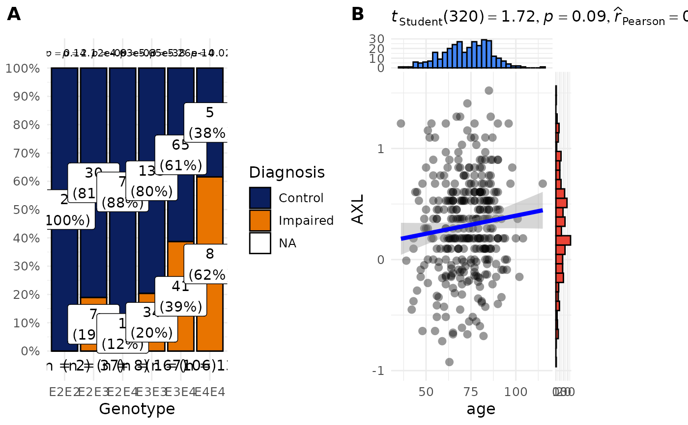

Assemble ggplot objects into a unified multi-panel figure
Source:R/AssemblePlots.R
AssemblePlots.RdA SciDataReportR wrapper around cowplot::plot_grid() and
cowplot::get_legend(). Cowplot supplies the underlying grid layout,
alignment, panel-label, and shared-legend tools; AssemblePlots() packages
them into one reporting-oriented workflow.
Usage
AssemblePlots(
Plots,
ncol = NULL,
nrow = NULL,
AutoLayout = TRUE,
RemoveNULL = TRUE,
CollectLegend = TRUE,
LegendPosition = "bottom",
LegendRelativeSize = 0.08,
Theme = ggplot2::theme_minimal(),
BaseFontSize = 12,
GlobalTheme = NULL,
GlobalLayers = NULL,
RemoveTitles = FALSE,
UseNamesAsTitles = FALSE,
Align = "hv",
Axis = "tblr",
Labels = NULL,
LabelSize = 14,
SuggestedBaseWidth = 4,
SuggestedBaseHeight = 4,
ReturnMetadata = FALSE
)Arguments
- Plots
A ggplot object or list of ggplot objects.
- ncol
Optional number of columns.
- nrow
Optional number of rows.
- AutoLayout
Logical; automatically estimate layout when
ncolandnroware not supplied.- RemoveNULL
Logical; remove NULL plots before assembly.
- CollectLegend
Logical; combine legends into a shared legend.
- LegendPosition
Position of shared legend. One of
"top","bottom","left","right", or"none".- LegendRelativeSize
Relative size allocated to legend area.
- Theme
Optional global ggplot theme.
- BaseFontSize
Base font size applied globally.
- GlobalTheme
Optional additional theme applied globally.
- GlobalLayers
Optional list of ggplot layers/scales applied to all plots.
- RemoveTitles
Logical; remove plot titles globally.
- UseNamesAsTitles
Logical; use plot list names as titles when plot titles are missing.
- Align
Plot alignment passed to cowplot.
- Axis
Axis alignment passed to cowplot.
- Labels
Optional panel labels.
- LabelSize
Panel label font size.
- SuggestedBaseWidth
Base width per column used for suggested figure dimensions.
- SuggestedBaseHeight
Base height per row used for suggested figure dimensions.
- ReturnMetadata
Logical; if
TRUE, returns plot plus metadata.
Value
If ReturnMetadata = FALSE, returns a ggplot object.
If ReturnMetadata = TRUE, returns a list containing:
- Plot
Combined plot object
- nrow
Estimated number of rows
- ncol
Estimated number of columns
- SuggestedWidth
Suggested figure width
- SuggestedHeight
Suggested figure height
- NumPlots
Number of plots
Details
Compared with calling cowplot directly, AssemblePlots() accepts ggplots or
nested plot lists, removes NULL entries, estimates a layout automatically,
applies shared themes and layers, can use list names as missing titles,
collects and positions legends, and returns suggested figure dimensions or
layout metadata. This avoids repeating the same publication-figure setup
across SciDataReportR analyses while preserving full ggplot compatibility.
Cowplot is used here because it provides predictable spacing and legend behavior for publication-style figures.
Supports:
Named or unnamed plot lists
Automatic row/column estimation
Global themes
Global ggplot layers/scales
Shared legends
Automatic NULL removal
Suggested figure dimensions
Examples
data(SampleData)
data(SampleVariableTypes)
df_Labelled <- RevalueData(SampleData, SampleVariableTypes)$RevaluedData
p_Categorical <- PlotAssociations(df_Labelled, "Diagnosis", "Genotype")
p_Continuous <- PlotAssociations(df_Labelled, "age", "AXL")
# Keep each association plot's own statistical annotation and legend.
AssemblePlots(
list(
"Diagnosis and genotype" = p_Categorical,
"Age and AXL" = p_Continuous
),
ncol = 2,
CollectLegend = FALSE,
Labels = c("A", "B")
)
